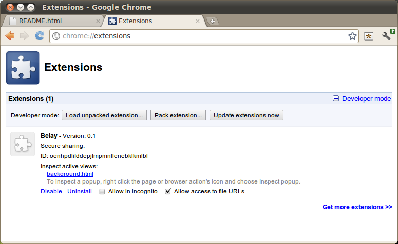

Now Belay will be visible in your extension list, and there should be an icon for Belay in the top right, next to the Wrench Menu. If you have many extensions installed, you may have to pull down a drop down list to see it.
.Clicking on this icon now won't do anything, because we haven't started the backend of Belay, where the real work happens.
run.sh, in the main
directory of the repository, that takes the path to your AppEngine installation's
dev_appserver.py script and starts each application in its own terminal.
For example, I have AppEngine installed in /home/joe/src/google_appengine,
so I run:
./run.sh /home/joe/src/google_appengine/dev_appserver.pyRunning this will open seven terminal windows, each running one application. The first time you do this, you may get a warning from AppEngine about auto-updating Python versions. Accepting or rejecting this will have no effect on Belay --- choose whatever you like.